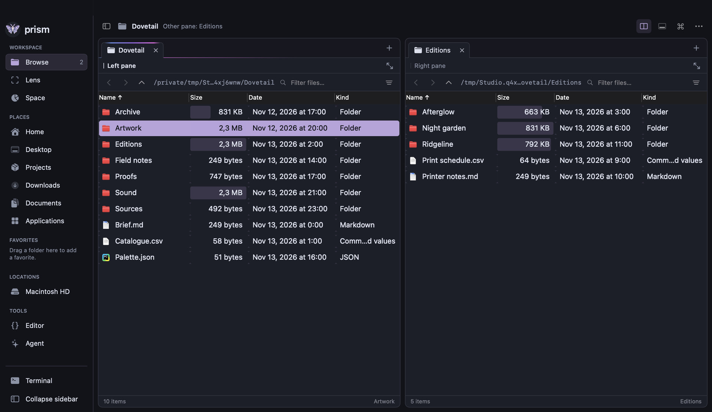
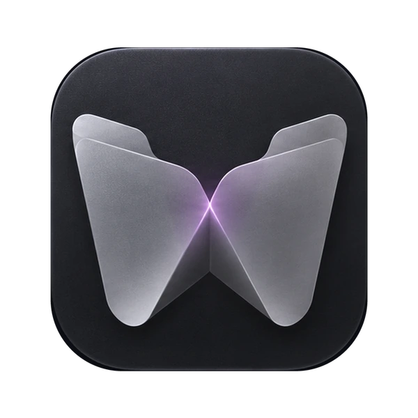
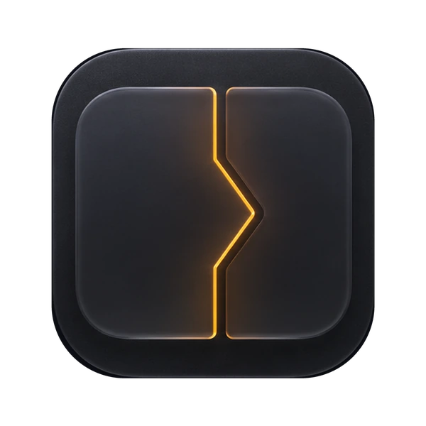

Keep the folder
in view.
A native Mac file browser for people who work between folders, an editor and a terminal. Give each its own tab, then put the two you need side by side.



From folder
to finishing touch.
Open a project, check the terminal, edit its source, and see what takes up space. This short tour visits all four views in the same sample print studio.
Pick your Prism.
Mothline greets new profiles. Choose a different Dock icon in Settings, under Colors, Fonts and Icons.


Get Prism for Mac
Preview 0.9.12, build 27. For Apple silicon running macOS 14 or later.
The preview carries Prism’s update signature. Apple Developer ID signing and notarization are pending. macOS may block a first launch.
Already using Prism? Open Prism Explorer › Check for Updates… to see what changed and update in place.